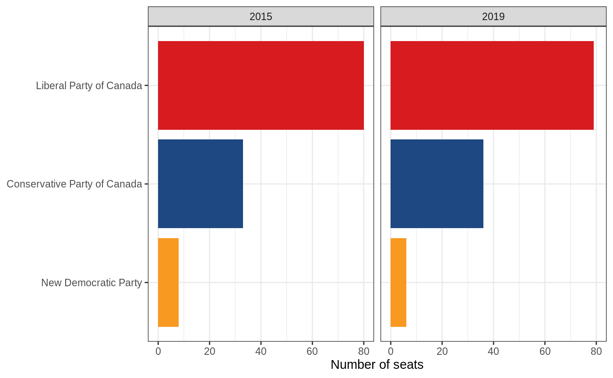

If you’re looking to make a simple plot of election winners, you probably want to use plot_election() or plot_election_map(). If you can’t make the plot you want using those, this vignette is for you. We’ll use the tidyverse and the lubridate packages. I happen to think the colours work better with ggplot2::theme_bw(), so I’m going to set that as the default theme.
The election_results() function is designed to give you the data that you probably want to work with. Use the years and provinces arguments to filter for specific elections and provinces, or use dplyr functions to get the data in the right form.
on_2015_2019 <- election_results(2015:2019, "Ontario")
on_2015_2019
#> # A tibble: 1,365 x 11
#> election_date riding name party votes result person_id province riding_label
#> <date> <chr> <chr> <chr> <dbl> <chr> <dbl> <fct> <chr>
#> 1 2015-10-19 ON/18… Bruc… Cons… 24836 Elect… 11535 Ontario Simcoe North
#> 2 2015-10-19 ON/18… Liz … Libe… 22718 Defea… NA Ontario Simcoe North
#> 3 2015-10-19 ON/18… Rich… New … 6037 Defea… NA Ontario Simcoe North
#> 4 2015-10-19 ON/18… Pete… Gree… 2543 Defea… NA Ontario Simcoe North
#> 5 2015-10-19 ON/18… Jaco… No a… 618 Defea… NA Ontario Simcoe North
#> 6 2015-10-19 ON/18… Scot… Chri… 319 Defea… NA Ontario Simcoe North
#> 7 2015-10-19 ON/19… Juli… Libe… 21947 Elect… 18491 Ontario Davenport
#> 8 2015-10-19 ON/19… Andr… New … 20506 Defea… 17868 Ontario Davenport
#> 9 2015-10-19 ON/19… Carl… Cons… 5233 Defea… NA Ontario Davenport
#> 10 2015-10-19 ON/19… Dan … Gree… 1530 Defea… NA Ontario Davenport
#> # … with 1,355 more rows, and 2 more variables: riding_id <dbl>,
#> # election_year <dbl>Data in this form is suitable for aggregation, either by dplyr’s group_by() %>% summarise() or using some kind of aggregator stat_*() in ggplot2. In this case, we’re plotting the number of votes received by each party in province of Ontario in the 2015 and 2019 general elections (you could also do this using plot_votes()). Note the use of forcats::fct_lump() and forcats::fct_reorder() to plot the most popular parties (if you don’t use these, you’ll get a whole lot of parties that received few votes). I also use scale_fill_party() here, not because it’s necessary, but because it makes the plot much more user-friendly (when is the last time you saw an election result plot without party colours!).
on_2015_2019 %>%
mutate(
party = party %>%
fct_lump(n = 4, w = votes) %>%
fct_reorder(votes, sum)
) %>%
ggplot(aes(party, fill = party)) +
stat_count(aes(weight = votes / 1e6)) +
facet_wrap(vars(year(election_date))) +
scale_fill_party(guide = "none") +
coord_flip() +
labs(x = NULL, y = "Millions of votes")This reflects the number of votes, but not the number of seats. To plot the number of seats, we need to filter() the election results data to only the winners of each riding (result == "Elected"), and stop scaling by votes, since each riding should take up the same amount of space regardless of how many votes the winner received (you could also do this using plot_seats(). To order the parties properly, we need to order by frequency rather than by the number of votes that each received, which I do here using forcats::fct_infreq() and forcats::fct_rev().
on_2015_2019 %>%
filter(result == "Elected") %>%
mutate(
party = party %>%
fct_infreq() %>%
fct_rev()
) %>%
ggplot(aes(party, fill = party)) +
stat_count() +
facet_wrap(vars(year(election_date))) +
scale_fill_party(guide = "none") +
coord_flip() +
labs(x = NULL, y = "Number of seats")
Another way to plot these data would be to put the year on the x-axis and stack all the bars on top of eachother to make it easier to compare the results from year to year. I’ll use the number of seats here, but one could also do this with the number of votes using the same stat_count() as above.
on_2015_2019 %>%
filter(result == "Elected") %>%
mutate(
party = party %>%
fct_infreq() %>%
fct_rev()
) %>%
ggplot(aes(factor(year(election_date)), fill = party)) +
stat_count() +
scale_fill_party(guide = "none") +
labs(x = "Election year", y = "Number of seats")Another plot you might want to make is one comparing how various provinces voted. The code for this is similar to the election year plot above, but instead uses province on the x axis. Because or original data was only for Ontario, we need to fetch a new subset of the data using election_results(). I think this makes more sense using votes rather than seats, so I’m going to use that version of the plot. I also think it makes more sense to use position = "fill" here, because we really want to see the percentage of how the provinces voted, rather than the number of votes cast in each province (although both are useful plots!).
election_results(year = 2015:2019) %>%
mutate(
party = party %>%
fct_lump(n = 5, w = votes) %>%
fct_reorder(votes, sum)
) %>%
ggplot(aes(x = province, fill = party)) +
stat_count(aes(weight = votes), position = "fill") +
scale_fill_party() +
scale_y_continuous(labels = scales::percent_format()) +
coord_flip() +
labs(x = NULL, y = "Proportion of votes")More often than not, you’ve probably seen an election map with the whole of Canada pictured, most of which are the three northern ridings of Nunavut, Northwest Territories, and Yukon Territory. This grossly overestimates the importance of these ridings, so as an alternative, the electionca package includes some information that can be used to plot ridings as a grid. The easiest way to do this is using plot_election():
If you’d like to tweak this plot, you’ll have to recreate it using election_data(), layout_province_grid, and some trickery with ggplot2::facet_grid(). The principle is that layout_province_grid contains a geom_x and geom_y column that are a quasi-geographical representation of each riding, grouped by province, and that ggplot2::geom_tile() can be used to display this. Because the x and y axes aren’t important here, we can use ggplot2::theme_void() to hide them.
election_results(2015:2019, results = "Elected") %>%
select(-province) %>%
left_join(layout_province_grid, by = c("election_date", "riding")) %>%
mutate(
party = party %>% fct_infreq(),
province = fct_rev(province)
) %>%
ggplot(aes(geom_x, geom_y, fill = party)) +
geom_tile() +
scale_fill_party() +
scale_y_reverse() +
facet_grid(
vars(province),
vars(year(election_date)),
scales = "free",
space = "free",
switch = "y"
) +
theme_void() +
theme(
strip.text.y = element_text(angle = 180, hjust = 1),
legend.position = "bottom"
) +
labs(fill = NULL)Even though this representation is far superior to a map, this package wouldn’t be complete if it coouldn’t plot a map. The e3asiest way to do this is using the plot_election_map() function.
If you’d like a different version of this, the boundaries dataset within this package contains the polygons for each riding (in sf format). You can join this to the results dataset by c("election_date", "riding")).
election_results(2015:2019, results = "Elected") %>%
left_join(boundaries, by = c("election_date", "riding")) %>%
ggplot(aes(fill = party, geometry = boundary)) +
geom_sf(size = 0.15) +
theme_void() +
scale_fill_party() +
facet_wrap(vars(year(election_date))) +
theme(legend.position = "bottom") +
labs(fill = NULL)